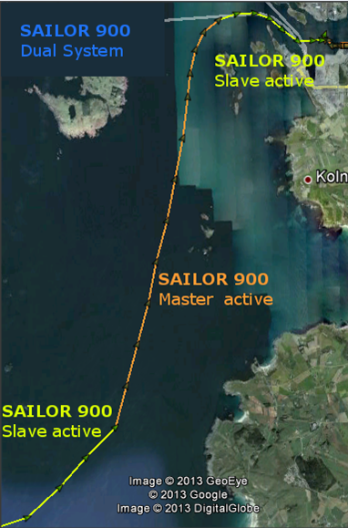

Statistic Tool

The dual antennas are supported by the statistics log which can be:
- Downloaded manually
- ACU emails the log
The Static tool webserver can be accessed via this link
http://esupport.thrane.com/TT/s900Stats/index.php (will open in a new tab)
Once the statistics file has been uploaded, a KMZ file can be downloaded and used with Google Earth to display the information.